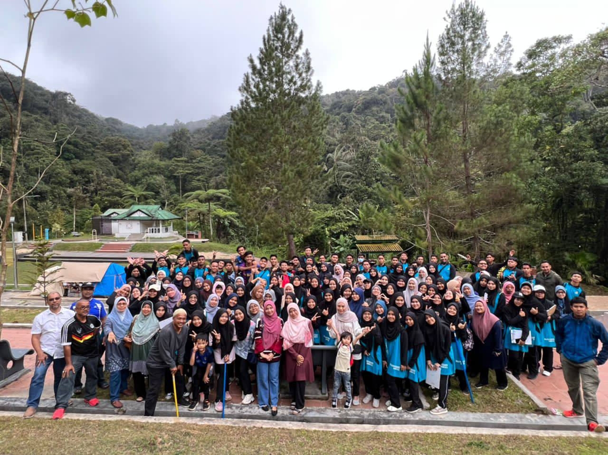
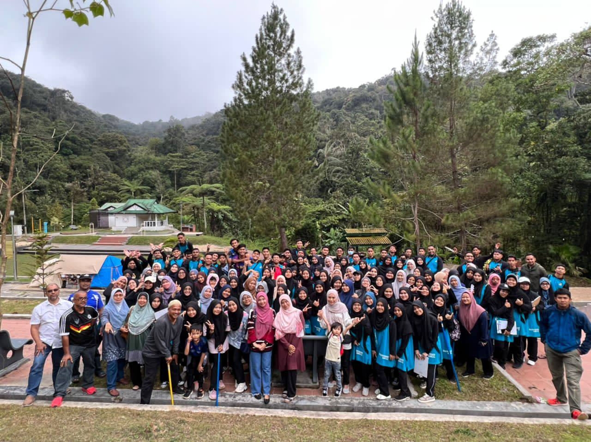

PRIMARY SCHOOL
From 2010 to 2015, I studied at Sekolah Kebangsaan Panggong, Pasir Puteh, Kelantan.
When I was 5 years old, I studied at Tadika Kampung Wakaf. Then, when I was 6 years old, I studied at Prasekolah Sekolah Kebangsaan Panggong.
From 2010 to 2015, I studied at Sekolah Kebangsaan Panggong, Pasir Puteh, Kelantan.
From 2016 to 2020, I studied at Sekolah Menengah Kebangsaan Kamil, Pasir Puteh, Kelantan.
I studied Form Six at Sekolah Menengah Kebangsaan Seri Aman, Pasir Puteh, Kelantan.
 


I continued my studies at the degree level at UiTM Kedah, pursuing a Bachelor of Information Science (Honours) in Library Management.